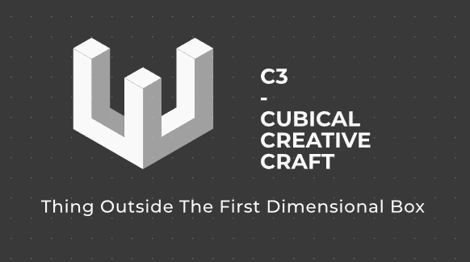

Overview
Purpose
To help the world see things out side of bias; into the sperit of engeanring by directing people to books or videos they need for the lemmets they have.
We bealive that a lot of problems in this world come because information given to the is made to satisfy bias and non-bias information does not spread to enuph people.
SO here at C3s Engearing of Purception we will provide the education that will alow people to build their own mineds.
Audience
This sight is mostly made for teachers (since evryone is a teacher in some way this sight is for everyone gernaly). This sight will have specific knowledge made into like a librayry and will mostlikely be viewd by adults with personal develpoment hopes for being less bias in how they commune. So keep it like a librayer with simple callm and soothing collors. keep in minde that kids may be on so the colors and art stile should be simple for a kid to see and understand but not made for kids.
other common information - probaly will be accest by phone a lot as the sigth is a libreary like google but just not at all big and not at all general. if used in schools then computers but it is like accesing a librayer witch has ben done so follow usful genral structures.
Branding
C3s engeanring of percepion
Style Guide
Color Palette
Palette URL:
https://coolors.co/e9ecef-dee2e6-ced4da-adb5bd-6c757d-495057-343a40-212529| Primary | Secondary | Accent 1 | Accent 2 |
|---|---|---|---|
| 343a40 | 212529 | adb5bd | ced4da |
Typography
Heading Font: Juar
Paragraph Font: Juar
Normal paragraph example
The best Whitewater Rafting in Colorado, White Water Rafting Company offers rafting on the Colorado and Roaring Fork Rivers in Glenwood Springs. Since 1974, we have been family owned and operated, rafting the Shoshone section of Glenwood Canyon and beyond.
Colored paragraph example
Trips vary from mild and great for families, to trips exclusively for physically fit and experienced rafters. No matter what type of river adventures you are seeking, White Water Rafting Company can make it happen for you.
Navigation
Site Map
Wireframes
Home